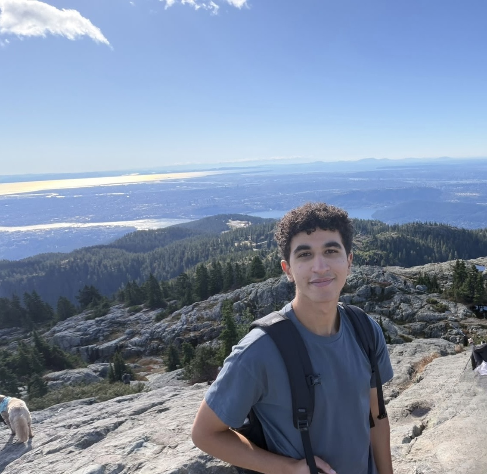
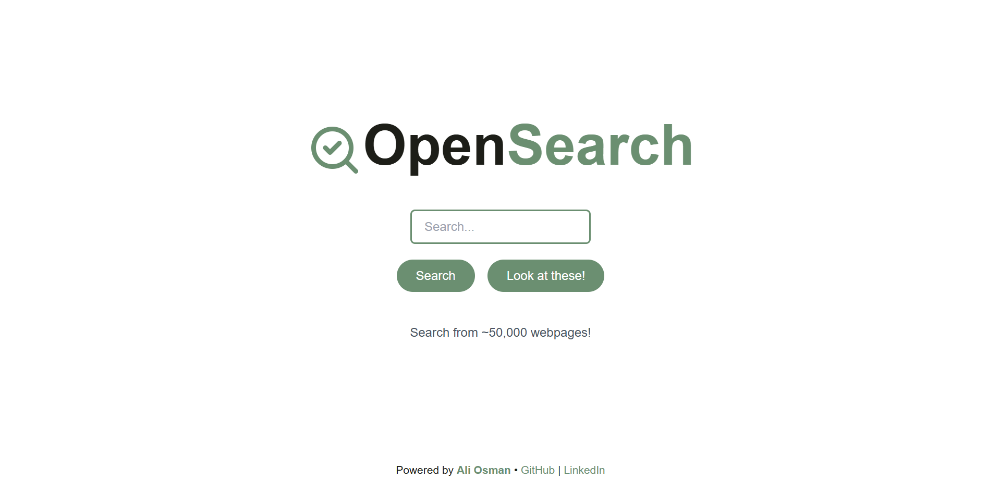
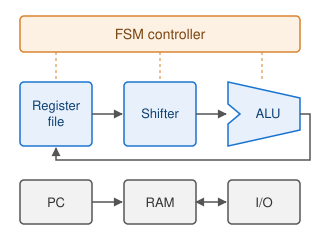

University of British Columbia, BASc in Computer Engineering
2023 – 2028 (expected)
Coursework: Operating Systems, Distributed Systems, Digital Systems Design, Databases, Networking.

I'm a Computer Engineering undergraduate at the University of British Columbia. I enjoy working on systems across software and hardware. I've worked on a cloud storage backend at AWS and flight software for small satellites. My current interests are in operating systems, digital design, and computer architecture for ML workloads.
I currently lead the Command & Data Handling team at UBC Orbit, a student satellite design team, and am a teaching assistant for CPEN 221 (Software Construction).
aosman08 [at] student [dot] ubc [dot] ca · GitHub · LinkedIn
Coursework: Operating Systems, Distributed Systems, Digital Systems Design, Databases, Networking.
Capacity modeling and dynamic resource allocation for the SQS storage backend.
Leading a team developing C flight software for a CubeSat on FreeRTOS (TI TMS570), including the command transport and retransmission protocol between the on-board computer and the ground station.
Test automation and firmware debugging for embedded Linux IP security cameras.

Go · Redis · MongoDB
A crawl, index, rank, and serve pipeline whose parallel goroutine worker pools coordinate through Redis queues. It ranks over 50,000 indexed pages by blending TF-IDF and PageRank.

SystemVerilog · Quartus · ModelSim
A multi-cycle CPU for a 9-instruction ARM-style ISA, built from a register-file, shifter, and ALU datapath with an FSM controller, on-chip RAM, and memory-mapped I/O. It runs assembled programs on a Cyclone V FPGA at 167 MHz and is verified at RTL and gate level.